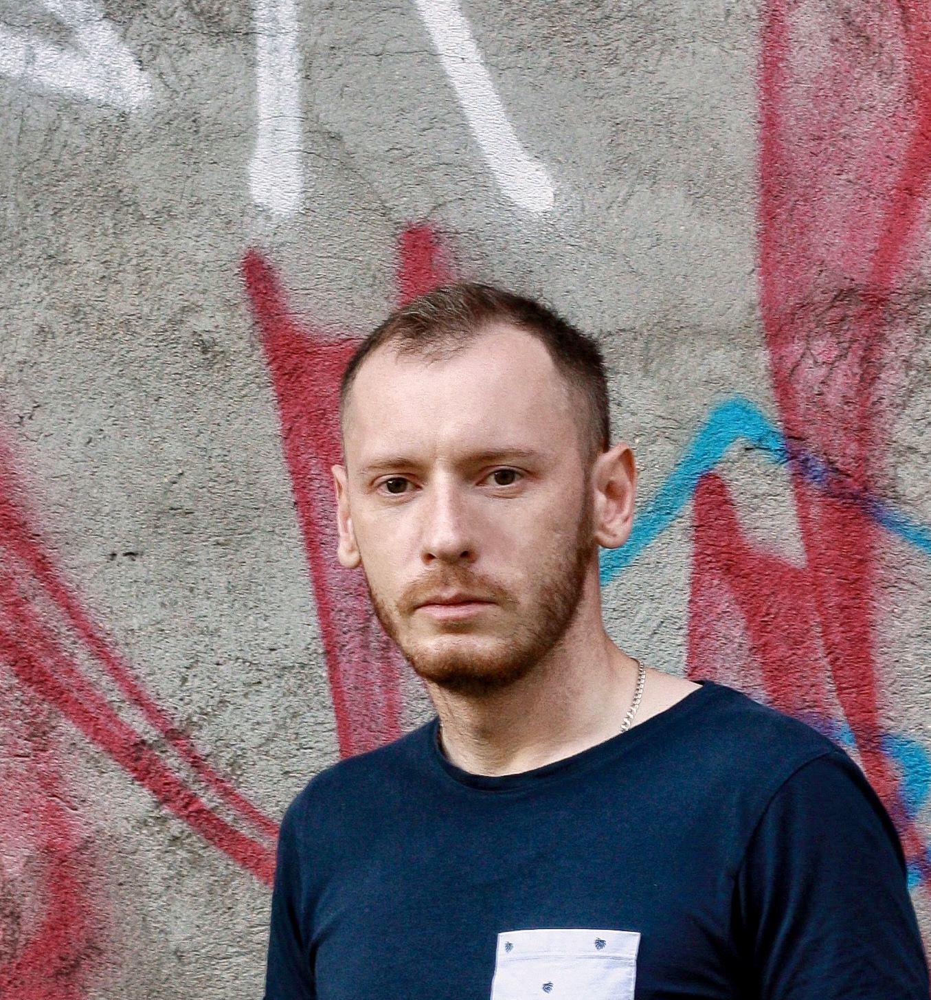

Николай Гудков
- +7(981)443-08-63
- goodnv@yandex.ru
- @nickgud
- www.github.com/nickgud
- г.Вологда (возможен переезд или удаленно)

Образование высшее. Стаж работы в сфере ИТ более 5 лет. Есть опыт преподавательской деятельности (почти 4 года). Имею обширные навыки решения проблем с аппаратным и программным обеспечением. Успешно выполнял задачи от мелкоузлового ремонта до построения локальной сети среднего предприятия с нуля. Много работал с системами видеонаблюдения и СКУД.
В настоящее время активно развиваюсь в сфере DevOps (прохожу курс повышения квалификации "DevOps для эксплуатации и разработки"). Открыт к новым задачам и контактам для получения ценных навыков и развития как себя, так и команды профессионалов.
Опыт работы
Системный администратор
В качестве системного администратор я работал в системе Helpdesk (osTicket), заведение/сопровождение/закрытие заявок пользователей (100+).
Оказывал L2-L3 поддержку как на месте, так и удаленно (VNC, RDP) по вопросам, связанным с общекорпоративной инфраструктурой.
Активно работал в корпоративной среде AD, GPO, WSUS, настраивал ресурсы и устранял неполадки.
Работал с сетевым оборудованием D-Link, HPE и Ubiquiti (настройка VLAN, обновление) в производственной среде.
Есть опыт использования систем виртуализации (Proxmox), мониторинга (Zabbix), защиты (Kaspersky Security Center).
Занимался настройкой и обслуживанием различного "бухгалтерского" ПО и оборудования (клиент-банки ДБО, ЭЦП, ККТ).
Внедрил на предприятии использование МЧД (машиночитаемая доверенность) в ЭДО и при сдаче отчетности.
Выполнял резервное копирование и восстановление данных с помощью систем clonezilla, rescuezilla.
Выступал в роли технического эксперта в ряде проектов компании:
- анализировал архитектуру решений и разрабатывал планы по развёртыванию и модернизации систем видеонаблюдения (Synology Surveillance Station, TRASSIR) и СКУД (PERCo, Parsec).
Техник-программист
В мои должностные обязанности входило:
Установка программного обеспечения на серверы и рабочие станции ОС Windows 8/10/2008,2012 Server.
Составление технической документации и инструкций для пользователей.
Диагностика и мелкий ремонта ПК, ноутбуков и МФУ.
Учет средств вычислительной техники и инвентаризация.
Установка и настройка СКЗИ (КриптоПРО CSP, VipNet CSP, Континент-АП) на АРМ где идет обработка персональных данных.
- Учавствовал в разработке мероприятий и документации по защите ПДн в организации (по 152-ФЗ) в пределах должносных обязанностей.
- Спланировал и организовал в короткие сроки корпоративную сеть организации (серверная+30 рабочих мест) с нуля.
Преподаватель
Читал лекции студентам 1-4 курса (около 120 студентов) по специальности Информационные системы и технологии.
Еженедельно проводил не менее 20 лекционных и 10 практических занятий.
Занимался разработкой учебных планов согласно программе обучения и организацией практики студентов.
Постоянно проходил повышение квалификации (ФГБОУ ВПО ВГМХА им. Н.В. Верещагина, курс "Практика разработки и применения электронных дисциплин в системе Moodle"; Вологодский колледж связи и информационных технологий, стажировка "Формирование IT-компетентности педагога профессиональной образовательной организации").
Системный администратор
Занимался установкой и конфигурированием операционных систем Windows/Ubuntu и специализированных программ (АС «Смета», Налогоплательщик, СУФД и др.). Производил монтаж (прокладка кабеля, установка розеток, подключение оборудования) и администрирование локальной вычислительной сети. Осуществлял поддержание в работоспособном состоянии и ремонт используемых средств вычислительной техники. Кроме этого выполнял администрирование и своевременное обновление сайта учреждения на CMS Joomla.
{kind=link}